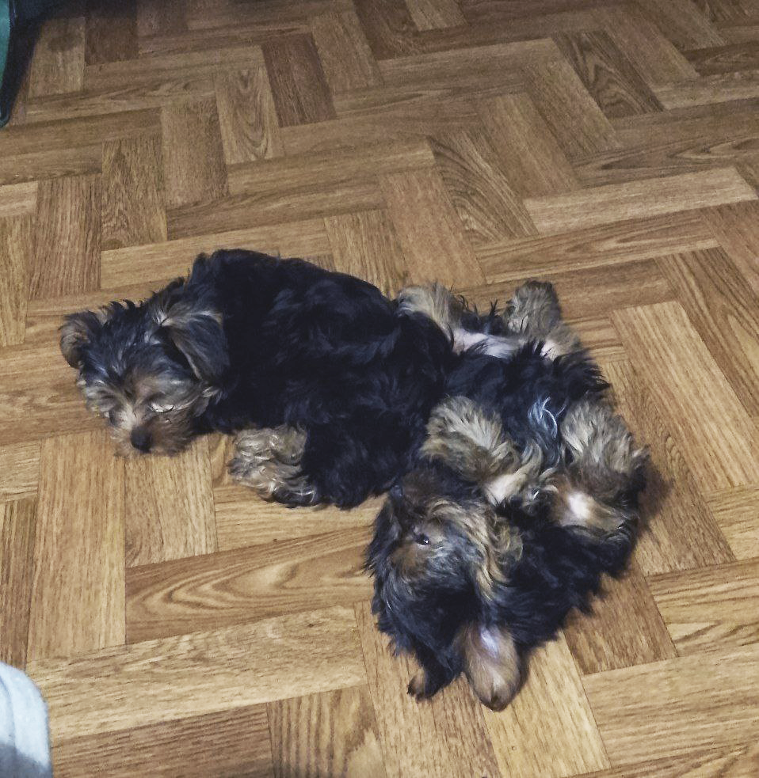

Заголовок
В мене завжди було все погано з фантазією, навіть заголовок не змогла придумати. Трошки впала в ступор коли почула що тематику сайту потрібно вигадати самотужки, з додаванням кнопочок, сторінок, картинок та іншого добра,прицьому не надто заховлюючись тим всим. Потім зрозуміла що ніщо не заважає мені написати про своїх собак (А їх аж дві!)

Ця малеча стала мені своєрідним подарунком на (тоді ще) новий 2024 рік. Подарунком якого я, каюсь, не хотіла. Тоді я тільки закінчувала універ, не мала постійної роботи і тільки но почала жити окремо від батьків, не було бажання брати на себе відповідальність. Мама давно вже тримала двох йорчиків, хлопчика та дівчинку, загалом поява нових собак в сім'ї було питанням часу, думали всіх цуценят розпродати, але не продали жодного, мама сильно до них притерлась але, власне, лишити собі весь виводок не могла, тож спихнула двох на мене. Зараз ці двоє сидять залюблені, хай тоді я й не хотіла їх забирати але зараз радію що так вийшло